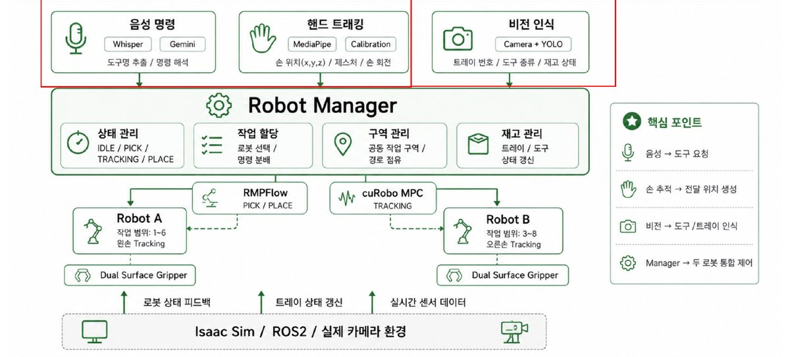
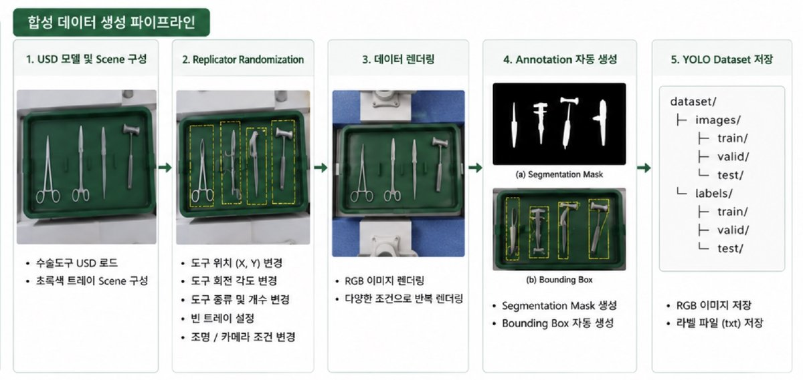
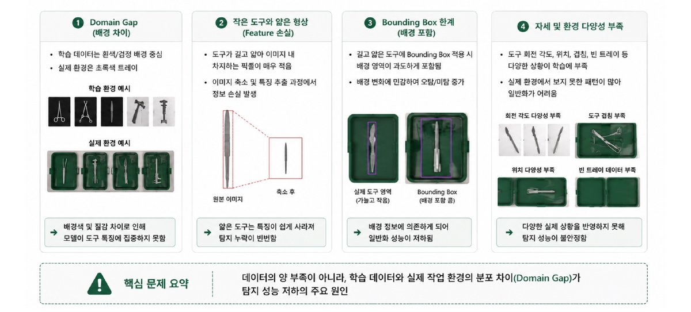

Last modified
한눈에 보기
1분 시연 영상
- 내 담당 — 팀장 · 시스템 구조 설계 · 도구 탐지 · ROS 2 환경 구성·연결 · 팀의 Replicator 합성 데이터 생성·도구 인식 모델 학습 참여
- 팀 결과 — 손 동작·음성 명령 → 협동로봇 두 대가 수술도구를 집어 전달·반납 · 로봇 시뮬레이터(Isaac Sim) 안에서 구현
- 목표 — 수술도구 분실·교차 오염 줄이기 · 완전 자동화보다 사람을 돕는 협동로봇
- 범위 — 부트캠프 팀 프로젝트(주말 포함 14일) · 실물 장비 없이 시뮬레이터에서만 진행
프로젝트 구현
집도의 역할을 맡은 사람이 손 동작·음성·웹 화면으로 도구를 요청하면, 작업 관리 프로그램이 협동로봇 두 대 중 하나에 작업을 맡겨 도구를 집어 전달하거나 트레이에 돌려놓는 시스템입니다. 전 과정은 로봇 시뮬레이터(Isaac Sim) 안에서 동작합니다.
가상 수술실에서 두 로봇이 도구를 집어 전달 (Isaac Sim)

팀은 가상 수술실 테이블 위 트레이 6칸에 수술도구를 놓고, 협동로봇 두 대가 요청받은 도구를 집어 집도의 손 쪽으로 가져가거나 트레이에 돌려놓도록 했습니다.
요청이 들어오면 작업 관리 프로그램이 도구가 있는 트레이를 찾아 두 로봇 중 하나에 작업을 맡기고, 두 로봇이 함께 쓰는 트레이 구역은 한 번에 한 로봇만 쓰게 합니다.

손 동작·음성·화면 클릭으로 요청 (MediaPipe · 음성 인식 · LLM)

팀은 집도의 역할을 맡은 사람이 마이크에 도구 이름을 말하거나 웹 화면에서 트레이를 눌러 도구를 요청하고 반납하도록 했습니다.
도구를 든 로봇은 웹캠으로 추적한 손 위치를 따라오고, 손 모양을 바꾸면 도구를 트레이로 돌려놓습니다. 로봇·트레이 상태와 명령 처리 결과는 웹 대시보드에 함께 표시됩니다.
도구 인식과 합성 데이터 (YOLO · Replicator)
도구 인식 프로그램은 카메라 영상에서 YOLO로 도구를 찾아 트레이 6칸에 배정하고, 어느 칸에 어떤 도구가 있는지를 ROS 2 메시지로 보냅니다. 학습 데이터는 Replicator(시뮬레이터 안에서 학습 이미지를 만드는 도구)로 만든 합성 데이터입니다.

실물 사진에서 합성 데이터로 학습 데이터를 바꾼 과정은 아래 진행 과정의 도구 인식 학습 데이터 전환 사례에서 다룹니다.
진행 과정 각 번호를 펼치면 사진과 함께 자세한 설명이 나옵니다
동기
- 과제부트캠프가 준 디지털 트윈(실제 설비를 가상 공간에 옮겨 시험하는 방식) 시뮬레이션
- 계기수술 뒤 기구 파편이 체내에 남는 사고 보도
- 주제(팀 회의)수술도구 전달 — 수술도구 분실과 교차 오염 줄이기
- 범위의료 현장에는 완전 자동화보다 사람을 돕는 협동로봇
구현 과정
네 번의 병합으로 두 로봇 시스템 통합
맡은 일팀장 · 시스템 구조 설계 · ROS 2 연결방법카메라 배치 · 주고받을 데이터 · 소통 구조 설계 → 팀의 네 번의 병합 · 토의 일정 조율결과팀이 두 로봇의 도구 전달 시나리오까지 시뮬레이터에서 확인
카메라 배치와 소통 구조
카메라 배치를 정하고 각 프로그램이 어떤 데이터를 전처리해 주고받을지 소통 구조를 설계했습니다.
사전 기획과 네 번의 병합
팀은 사전 기획 뒤 네 번의 병합으로 각자 만든 기능을 합쳤습니다.
토의 일정 조율과 알고리즘 토의
병합 과정에서는 팀 토의 일정을 조율하고 알고리즘 개선에도 참여했습니다(도구 인식, 시스템 동작을 위한 수술대 위치 건의 등).
두 로봇 시나리오 확인
팀은 두 로봇이 도구를 전달하는 시나리오까지 시뮬레이터에서 확인했습니다.


문제해결
도구 인식 학습 데이터 전환
팀 작업 참여문제 파트도구 인식(YOLO) — 실물 사진 학습 모델문제시뮬레이터 속 가상 도구를 제대로 찾지 못함해결(팀) Replicator 합성 데이터로 사전학습 YOLO 파인튜닝 → 트레이 6칸 배정 · 저는 인식 설계, 데이터 생성·학습 참여배운 점검증 데이터는 실제 사용 환경에서
8~9일차 실물 사진 학습 모델
프로젝트 8~9일차에 오픈소스 실물 수술도구 사진으로 학습한 도구 인식 모델(YOLO)을 시뮬레이터에 붙였지만, 가상 도구를 제대로 찾지 못했습니다.
배경 차이와 검증 데이터
팀은 흰색·검정 배경 위주의 학습 사진과 초록색 트레이 환경의 차이를 주된 원인으로 정리했습니다. 제가 돌아보면 test 데이터셋도 같은 오픈소스 데이터셋 안에서 나눴고, 시뮬레이터 화면으로 미리 확인하지 않고 적용한 쪽에 가까웠습니다.

Replicator 합성 데이터 파인튜닝
팀은 시뮬레이터의 3D 도구 모델과 트레이 환경에 맞춘 합성 데이터를 Replicator로 만들어, 사전학습된 YOLO 모델을 합성 데이터로 파인튜닝했습니다. Isaac Sim과 Replicator는 처음이라 강사와 부트캠프 자료로 익혔습니다.
트레이 구역 6칸 설정
인식 시스템이 도구를 찾아 트레이 구역 6칸에 배정하면, 인식 결과는 ROS 2 메시지로 웹 대시보드의 트레이별 도구 상태에 표시됩니다.
칸 위치는 사람이 화면에서 꼭짓점을 클릭해 지정하는 설정 파일로 따로 두어, 배치가 바뀌어도 코드를 고치지 않고 칸 위치만 다시 잡게 했습니다. 이 칸 지정 도구는 팀원이 만들었습니다.
시뮬레이터 안에서만 확인
그 결과 시뮬레이터 카메라 영상에서 트레이 6칸의 도구를 찾아 이름과 상자로 표시하게 됐습니다. 전 과정은 시뮬레이터 안에서만 확인했고 실물 도구·환경에서는 검증하지 않았습니다.

학습 데이터를 바꾼 이 경험에서 검증 데이터는 실제 사용 환경에서 뽑아야 한다는 것을 배웠습니다.
팀에서 일한 방식
- 역할 분담각자 맡고 싶은 분야 · 이미 아는 분야 기준 → 저는 도구 탐지(YOLO 학습 경험 · ERP42 프로젝트에서 다뤄 본 컴퓨터비전)
- 학습 환경클라우드 학습 환경(Colab) · Roboflow의 실물 수술도구 사진 데이터셋(도구 5종) · 검증 지표(mAP50)로 확인 → 가상 도구를 못 찾는 문제 → 합성 데이터 재학습 참여(수술도구 인식 개선 사례)
- 소통주말에도 매일 만나 함께 개발 · 막히면 그 자리에서 짧게 회의
팀 협의로 바꾼 결정도 여럿이었습니다.
- 그리퍼RG2(작고 힘 조절이 어려움 → 트레이 들기·수술도구 집기 불편) → 시뮬레이터 안에서 두 면으로 흡착하는 그리퍼를 만들어 교체
- 배치실제 수술실 모사 · 두 로봇 병렬 작업 → 로봇을 직각으로 세우는 안과 테이블 위치를 토의해 최종 위치 결정
- 연산 자원Isaac Sim 렌더링 렉·프레임 드랍 → 시뮬레이션 에셋 해상도·GPU 자원 분배 조정 · GPU 추가 · 노트북 두 대 랜선 연결
배운 점
- 깨달음검증 데이터는 실제 사용 환경에서 뽑아야 한다 — 실물 사진으로 학습한 모델이 시뮬레이터 속 도구를 찾지 못한 경험
- 기준학습 데이터를 고를 때 모델이 쓰일 장면과 맞는지를 기준으로 삼음
기술 상세
시스템 흐름 펼쳐 보기
시스템 흐름
팀 시스템은 손 추적(MediaPipe, 카메라 영상에서 손 관절 위치를 찾는 라이브러리)과 음성 명령(음성 인식 결과를 LLM(대규모 언어 모델)이 명령으로 해석)을 입력으로 받아, 작업 관리 프로그램이 두 로봇에 도구 집기·반납 작업을 나눠 주고 상태를 관리합니다.
도구 인식 노드
도구 인식 프로그램(노드)은 카메라 영상에서 YOLO로 도구를 찾아 미리 지정한 트레이 구역에 배정하고, 어느 트레이에 어떤 도구가 있는지를 ROS 2 메시지로 보냅니다. 손 추적·음성 명령·웹 대시보드는 팀원이 맡은 부분입니다.
참고 문서
팀 발표 자료(세부 기술): 발표 자료(PDF, 66쪽)
발표 자료 목차·키워드: 주제 선정 배경 p4 · 시스템 아키텍처 p6 · ROS 2 노드 구조 p7 · 흐름도 p8 · 수행 절차 p11 · 수술실·로봇 배치 p13 · 흡착 그리퍼 p15 · 두 로봇 작업 관리 p17 · 공동 작업구역 p19 · 음성 인식 p21 · 손 추적(MediaPipe) p26 · RMPFlow·cuRobo p38 · 도구 인식(YOLO) p54 · 실패 요인 분석 p56 · Replicator 합성 데이터 p57 · 트레이 구역 설정 p61 · 대시보드 p64 · 자체 평가 p65
코드 근거
Rokey_cobot3 — 팀 최종 코드의 제출 스냅샷(README가 코드 구성과 공개하며 바꾼 점을 설명합니다)